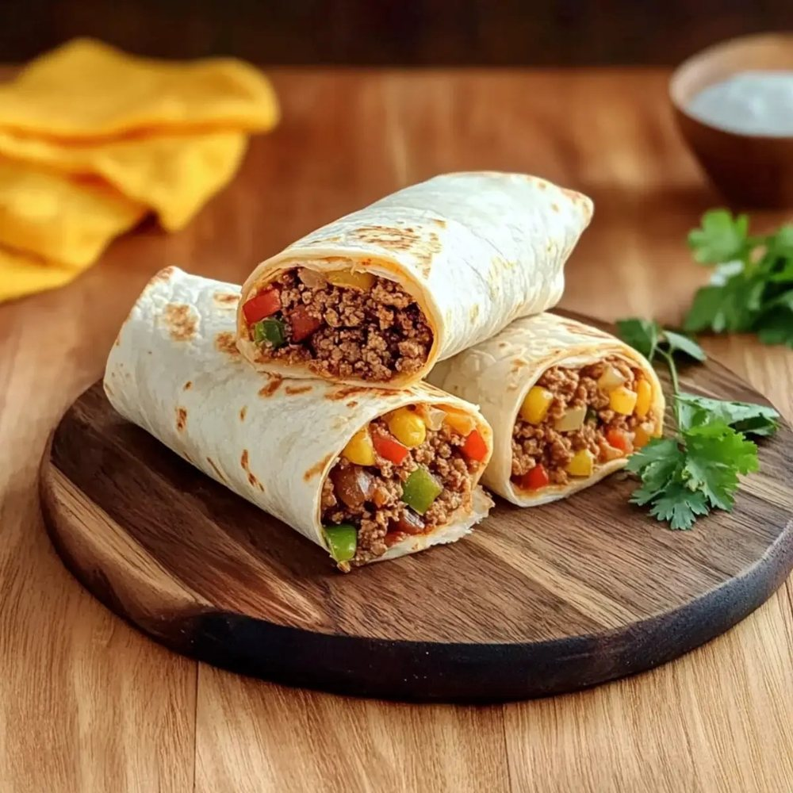

Salgados · Massas fritas/assadas
Burritos de carne moída

Ingredientes
- 500 g de patinho moído
- 6 tortillas médias
- 150 g de feijão cozido e escorrido
- 120 g de muçarela
- 1 cebola
- 1 pimentão
- Alho, páprica, cominho e sal
Modo de preparo
- Doure a carne com cebola, alho, pimentão e temperos.
- Misture o feijão e deixe o recheio ficar bem sequinho.
- Espere esfriar e distribua nas tortillas com o queijo.
- Dobre as laterais, enrole bem e congele individualmente.
Observação
No dia: descongele no micro-ondas, aqueça completamente e doure na frigideira por 2 minutos de cada lado.